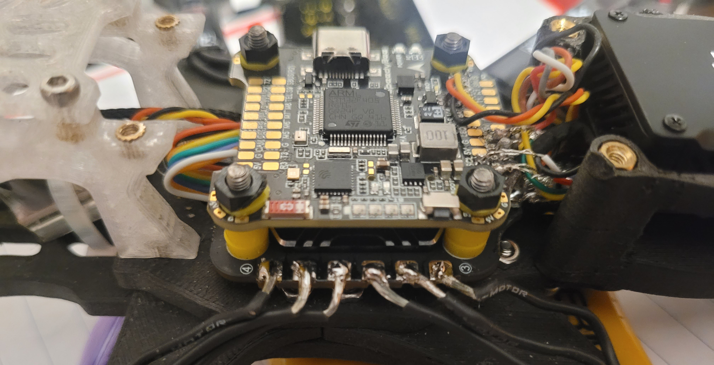

Structural Optimization & Iteration
The frame was modeled in Autodesk Fusion and was refined ovr time through 6 main designs to optimize weight distribution and stiffness. Finite Element Analysis (FEA) was used to evaluate stress hot spots at the motor mounts, throughout the arms and stack interfaces under simulated thrust loads (~1.8-2.2 kg total thrust per motor).
Localized reinforcement and arm thickening from 10mm to 12.7mm which reduced peak simulated stress by 28% while increasing frame mass by less than 6%. Fillets and geometry smoothing were used to reduce stress and improve durability under vibration.
Testing, Materials & Performance Validation
Initial prototypes were made from acrylic, which had brittle fracture during early flight tests. Carbon fiber reinforced nylon (PA6-CF) was chosen because of its high tensile strength (~100 MPa) and impact resistance, while also reducing vibrations. Print parameters were also optimized, increasing infill density from 20% to 40% and wall count to 5 layers, resulting in:
- ~35% increase in structural rigidity
- Noticeable reduction in arm flex under high throttle
- Improved crash survivability
- Stabilized flight controller and camera footage